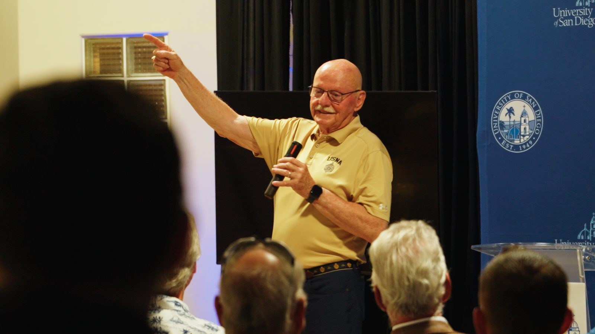
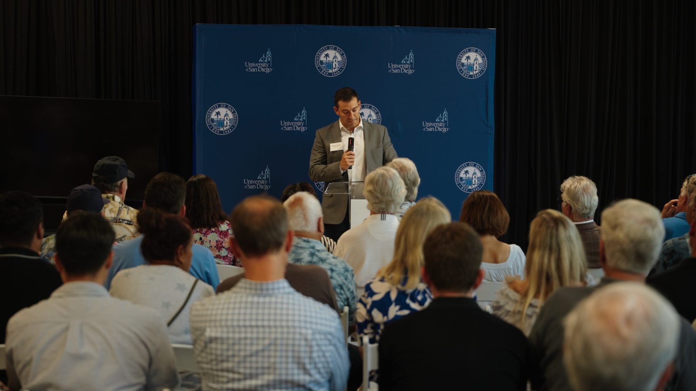
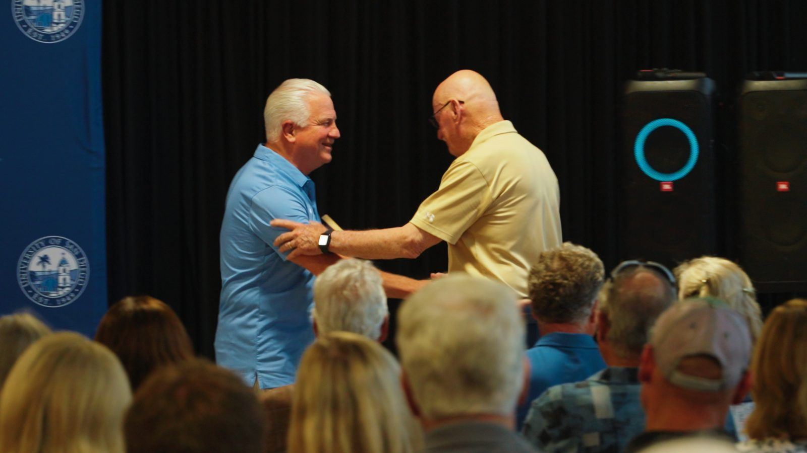
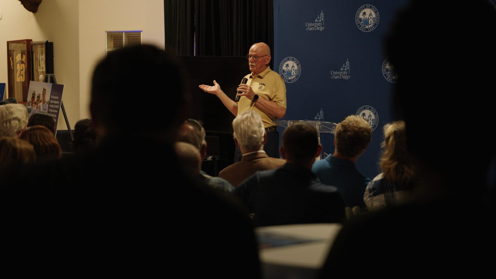
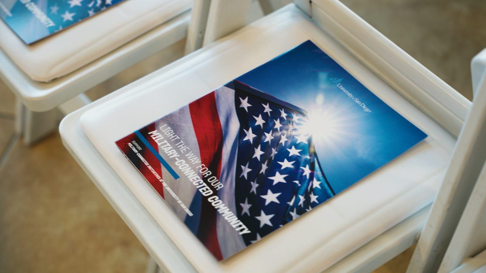

Thirty Seconds in 1967
He opened with the airplane.
He was flying a combat mission over North Vietnam when the first surface-to-air missile came up at him. He dodged it. Then he picked up the second one and understood the problem immediately.
It wasn’t moving. CBDR.
Any pilot or any mariner knows what that means. Constant bearing, decreasing range. If a contact is closing on you and holding the same spot in your windscreen, the bearing is constant, and decreasing range means collision. The ones that appear to be tracking somewhere else are the ones that miss you. The one that looks frozen in place is the one with your name on it.
The one that looks frozen in place is the one with your name on it.
He rolled hoping for it to pass underneath but it clipped him. He ejected. His wingman saw him come down and could not get to him.
Soon later he was captured. He did not come home until 1973.

Here is where the room expected the story to go dark. It did not.
The Alphabet in a Box
Shave and a Haircut
The first problem in confinement isn’t just loneliness. It is that you do not know who is next to you.
So he would tap on the wall. Five beats. Shave and a haircut.
If two beats came back — two bits — he had an American.
Sit with that for a second. The thing that identified him was a rhythm every American alive in 1967 had somewhere in his body, and that no guard in Hanoi had any reason to recognize. They were held in separate cells specifically so they could not become a group. It took five taps to defeat that.
The Alphabet in a Box
Once you have found each other, you need language.
They built it out of a grid. Put the alphabet into rows and columns, and every letter becomes two numbers. Tap the row, pause, tap the column. That is one letter. Start again for the next one.
It is slow. It is also a working communications network built by men in isolation, using a wall and a knuckle — and they used it to run a school. Get caught with calluses and you’d get beat.
Whatever a man knew, he taught, because what was in their heads was the only raw material anybody had. Math. History. Engineering. Carey knew French. So Carey taught French.
“By the end of it,” he said, “I had six men fluent in French.” Then he paused. “According to me.”
The room burst into laughter.
That is the whole talk in three words. A man describing a prison, getting a room of business people to laugh out loud, never once asking anybody to feel sorry for him. He did that for an hour. It was not a technique he was recommending. You got the sense it is how he got out.
When he says faith in your teammates, this is what he is pointing at. Not a sentiment. A system, built letter by letter, at two taps a character.



How Did You Do It
Someone asked him the question everyone in the room was holding. Everything in the hour had circled back to the same four answers, and he gave them plainly.
Do what you have to do. The least heroic of the four, and it comes first. Not do something extraordinary. Do the next thing in front of you, and then do it again tomorrow, for a length of time nobody is going to tell you in advance.
Do your best. Notice what that is not. It is not win. Best is the part you own, and in a cell it was the only part he owned.
Keep your sense of humor. He had already proven this one on stage before he said it out loud.
Keep the faith. In yourself, in your teammates and in God.
No framework. No acronym. Nothing you would put on a slide. Four lines simple enough to hold onto for 2,000 days.
Do what you have to do. Do your best. Keep your sense of humor. Keep the faith.
The Part I Keep Thinking About
He was dating a girl before he deployed. He had told her that if anything ever happened to him, she should go meet his parents.
Something happened to him. She went and met his parents.
Five and a half years later he came home. They got married.
I do not have a business lesson for that. I just have not stopped thinking about it — what love can do, and what hope and keeping the faith can carry.
What I’m Not Going to Do
I am not going to draw a straight line from a prison in Hanoi to a real estate portfolio. Nothing we do compares, and reaching for that comparison would cheapen what he lived through.
But there is one honest piece of it that travels, and it is not the suffering. It is the not knowing.
Nobody told him it would be five and a half years. Not in 1967, not in 1969, not in 1971. He woke up every one of those mornings without a date, and the four things are what you use when you cannot see the end of the thing you are in.
We hold assets for years. We underwrite a business plan and then find out what the business plan was actually going to be. Rates move, insurance moves, a market cools, a crew walks off a job. Most of what decides the outcome is not up to us on any given Tuesday. What is up to us is whether we do the next thing, do it well, stay human while we do it, and keep faith.
He wrote a book about it in 2000, The Ways We Choose. The title is the argument: you do not pick the circumstance, you pick the response.
You do not pick the circumstance. You pick the response.
The Ways We Choose: Lessons for Life from a POW’s Experience — on Amazon.

See you next Sunday,